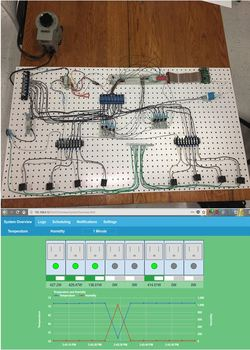

Michael Majdalani
Computer Engineer
About Me
I am currently a Senior in Computer Engineering at the University of Rhode Island. As an Engineering major,
I have been taught the skill of lifelong learning, as well as many other engineering skills. I have completed several
projects over the past four years, but my interest is mainly in hardware development, firmware, and some web development.
My experiences at the University of Rhode Island have prepared me to tackle any problem that appears in the workforce.
Experience
Acumentrics - Total Power Solutions | Engineering Intern |
Research and development of real-time web application for Smart Batteries using SMBus, Python, and Javascript. |
Cable Components Group | Engineering Intern |
Researched and Developed an electronic test rig to test the thermal stability of several Power over Ethernet(PoE) Cables wrapped in a bundle |
University of Rhode Island, COE | Teachers Assistant |
Overseeing and teaching a lab of approximately 20 students about the Unix Command System, the LC3 Simulator, and Assembly language programming. |
University of Rhode Island, WRIU 90.3 FM | Chief Engineer |
Servicing, repairing, calibrating, regulating, fine-tuning, and testing machines and equipment throughout the station. Upgrade equipment when possible due to outdated equipment in the station currently. |
The Ryan Center | Event Supervisor |
Responsible for training and managing new and existing employees. Familiar with ticketing, seating locations, procedures and building policies as well as handling large groups of people and the ability to manage high stress situations. |
Education
University of Rhode Island - College of Engineering |
Notable Courses
- ELE201: Digital Circuit Design
- ELE212: Linear Circuit Theory
- ELE301: Digital Design with FPGAs
- ELE314: Linear Systems and Signals
- ELE405: Digital Computer Design
- ELE408: Computer Organization (Embedded Systems)
- ELE437: Computer Communications (Introduction to Networking)
- ELE458: Digital Control Systems
|
Projects
ELECOMP Capstone Design Project | Network Managed Power Distributuion Unit |
|  |
Worked with a team of engineers to develop an 8 outlet prototype Power Distribution Unit capable of remotely
monitoring metrics such as input voltage, output current, total power, temperature, and humidity,
as well as allowing the user to remotely toggle outlets through a Web Application. |